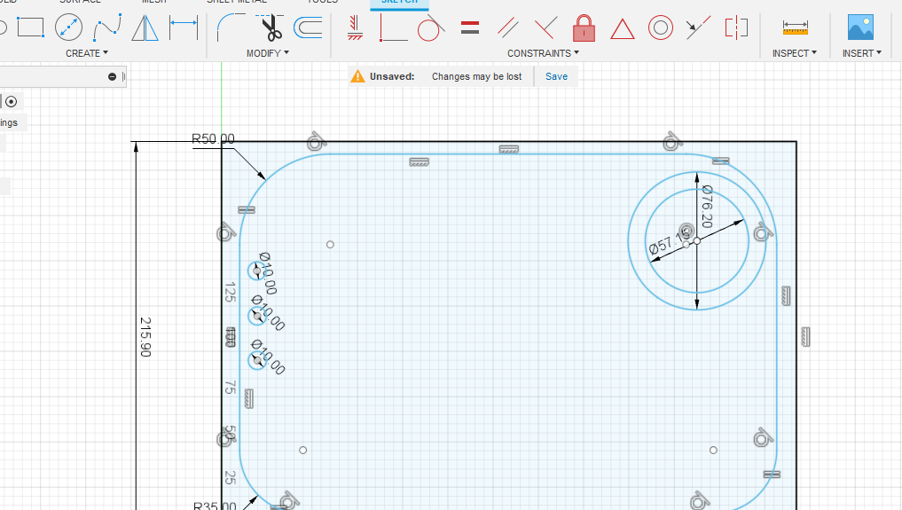
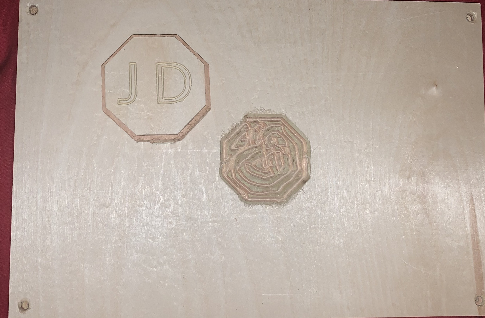

First off all I wanted to say that this project is not yet finished. I didtn realize that time with the Shaper was such a valuable commidity here at Wheaton, but i'll try and get it finished ASAP, just please let me know when I can get it done.
The Shaper is definitly the coolest tool I've ever worked with. My first thoughts when we were going through training was something along the lines of "Oh neat so its just a mini drill press that you move around" but man was I wrong and I started really enjoying the machine. Allow me to explain my relationship with the drill press, which explains my love for The Shaper (I like having a capital "T" in "The Shaper", makes it sound more badass".
Most teenagers get summer jobs that are things like mowing lawns, or working in an ice cream stand...but not me. From the age of about 14 until I was 19 every summer I worked at my dads small manufacturing company making docks, swim platforms, and boat lifts. The easiest, and most mentally draining job there was drilling holes in dock legs, so natruall that was the job I was given most often. Let me give you the brief run down of drilling holes in dock legs:
As you can see....not very exciting. I've spent many summer days standing at a drill press blasting holes in beams, which is why I love The Shaper so much. What I would would take me 8 hours to do would take a CNC Operator probably 20 minutes.
Magic From what I can tell, The Shaper takes an SVG file from a thumbdrive and puts it on a digital scan of a workspace. It reads this workspace by taking a series of pictures and scaning some special tape. This tape is cool too becuase it means you can use The Shaper anywhere that tape can stick too.
The first step for this project was planning on what I wanted my orginizer to orginize. I know one of them was defnitly going to be a cup so that's one checked off. My mind went next to the things I actually have on my desk while I do work. which is when I thought of making a phone holder. I didnt want just a box I could lay my phone in however, I wanted something a little more useful which is why I drafted a tiered phone holder that (if it works correctly) I'll be able to lay my phone in and have it angle up towards me.
I play a lot of darts with the dart board in my room, and I'm always misplacing my darts. I fear that one day I'll have a bad throw bounce off my wall and I wont be able to find the dart; until the next morning when I step out of bed and it finds the bottom of my foot. This is why I added 3 small holes where I can store my darts.
I also wanted a place to store my glasses which I'm always losing. I was also inspired by the little cupholder I made in training, and decided to make a pocket'ed cut where I can store that when its not in use.
The second step was creating for design for the desk orginizer I wanted in Fusion 360. I started in 2D, making the correctly sized work area and then putting in the correctly sized shapes for my holders. I then rendered it into 3D, and choose the correct depths for my contianers. I exported my file into Adobe Illistrator to add text, and the octogon I had sized out for my cup holder, becuase I had already made that object in Adobe Illistrator.
CAD makes me SAD: While I'm sure Fusion 360 is great, it is a huge pain in the rear end to try and learn. I couldnt figure out how to do simple things like move objects, or copy and paste and things kept getting deleted! I never thought an unintuative program would make me so frustrated I'd sweat...but Fusion 360 pulled it off.
I put my file onto The Shaper's thumb drive and plugged it into the machine. This is where I would have had more to add exept that I didnt schedule any Lab time early enough to finish, so all I have is one pocket very messily drilled....To be Continued!
I promise I'll make this pretty ASAP!